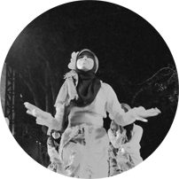
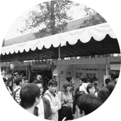

OPEN HOUSE UNIT
30 AGUSTUS 2014
Inti acara dari OHU 2013 yang diadakan di ITB.
Terdiri dari 7 mata acara.
 Panggung Utama
Panggung Utama
Penampilan dari unit-unit ITB.
- Panggung Kecil
Penampilan dari unit Seni-Budaya dan Kajian.
 Gelanggang Olahraga
Gelanggang Olahraga Penampilan dari Unit Olahraga.
 Wahana Karya
Wahana Karya Games dari unit-unit ITB.
 Wahana Ceria
Wahana Ceria Games besar untuk pengunjung OHU.
- Pameran Karya
Pameran dari unit Agama, Pendidikan dan Kajian.
 Media OHU
Media OHUTerdapat Radio dan bioskop OHU.